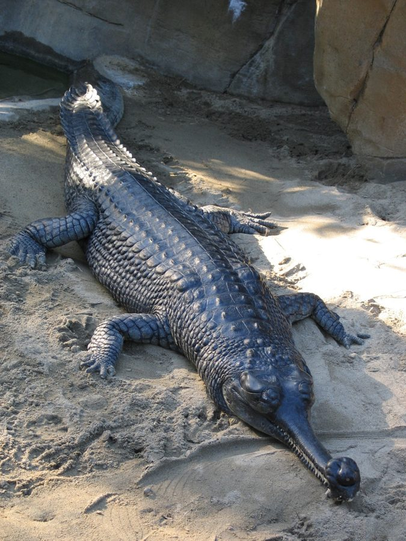

घड़ियालGharial
Gavialis gangeticus · Gavialidae · REP-0023

- Scientific name वैज्ञानिक नाम
- Gavialis gangeticus Geoffroy Saint-Hilaire, 1825
- Family कुल
- Gavialidae
- Hindi हिंदी
- घड़ियाल
- Local names स्थानीय नाम
- gharial, ghariyal, mada machha
- Status here यहाँ की स्थिति
- native
- Movement आवागमन
- Resident, here all year
- IUCN IUCN
- CR
- Review समीक्षा
- audited and independently read
When to look कब देखें
Present all year. साल भर मौजूद।
Uses and possibilities उपयोग और संभावनाएँ
Drawn from the documented uses in the profile below, where each is labelled traditional, current or a research lead. All uses →
Tell it apart from इनसे अलग पहचानें
घड़ियाल / Gharial
Gavialis gangeticus Geoffroy Saint-Hilaire, 1825 — Gavialidae
घड़ियाल — भारत का सबसे दुर्लभ और सबसे खतरनाक नदी शिकारी, जो केवल और केवल घाघरा और गिरवा नदियों में बचा रहता है, और उन भी सबसे गहरे हिस्सों में। इसका पूरा शरीर लंबा और पतला है, पर सिर और जबड़े भारी और लंबे होते हैं — जबड़ा एक सिकार का सिकार की तरह। हज़ारों सूक्ष्म दाँत इसके गहरे गड्ढे में पड़े मछलियों को पकड़ते हैं। त्वचा ढीली, ढलवाँ और गहरे जैतून या सलेटी रंग की। इसके सिर पर उभरे हुए कड़े हड्डियाँ हैं। वन्यजीव संरक्षण अधिनियम 1972 की अनुसूची I में पूरी तरह सुरक्षित, लेकिन विलुप्त हो रहा है। घाघरा-कटर्निहाट और गिरवा जनसंख्या इस क्षेत्र के निकटतम ज्ञात रिकॉर्ड हैं।
Quick Identification त्वरित पहचान
| Feature | Description |
|---|---|
| Size | 4–5.5 m; extremely narrow, elongated snout |
| Head & Jaw | Distinctly long, slender jaws; markedly constricted at the base |
| Snout | Extremely narrow, likened to a pottery jar spout (gharial) or ladle |
| Teeth | Numerous fine, sharp, closely-set teeth (100+) for seizing fish |
| Colour | Olive-brown to dark grey; lighter ventral surface |
| Eyes & Nostrils | Eyes positioned near the top of head; nostrils at the snout tip |
| Geographic range | Only in Ghaghra and Girwa river systems; Critically Endangered; one of the world's rarest crocodilians |
Field tip: In the Ghaghra or Girwa rivers, an extremely long, slender-snouted crocodilian is a Gharial and is highly specialized for fishing. Dangerous; observe only from a distance with expert guidance.
हिंदी — कैसे पहचानें: घाघरा और गिरवा में ही। अत्यंत लंबी, पतली नाक — मगर की चौड़ी नाक से बिल्कुल अलग। सूक्ष्म दाँत, मछली पकड़ने के लिए बनी। ख़तरनाक।
Morphology आकारिकी
Biometrics (typical measurements for Indian populations):
| Measurement | Range |
|---|---|
| Total length | 4.0–5.5 m (maximum recorded 7 m) |
| Snout-to-jaw-notch | 50–60% of head length |
| Weight | 500–900 kg |
| Teeth count | 100–110 pairs |
Head and Snout: The head is extremely narrow and elongated. The snout is distinctly thin, tubular, and tapers to a blunt tip. The jaw margins are almost straight rather than curved. A characteristic bony prominence or "ghara" (pot-like swelling) is present on the male's snout at the nares (nostrils) — the source of the common name. The eyes and nostrils are positioned high, allowing the gharial to remain nearly submerged while hunting.
Body: Slender and streamlined compared to muggers and other crocodilians. The dorsal surface is covered with keeled osteoderms in regular rows. The body is compressed laterally (side to side), making it more eel-like in profile than the mugger's rounded form.
Limbs: Weaker than in muggers; the hindlimbs are more specialized for aquatic locomotion than for hauling-out.
Sexual dimorphism: Males develop the prominent narial pot (ghara) in the breeding season; females are smoother.
Behaviour & Ecology व्यवहार और पारिस्थितिकी
An obligate piscivore, the Gharial is exquisitely specialized for fishing. It hunts in deeper river channels, swimming with rapid side-to-side tail movements. When a fish approaches, the gharial's head snaps sideways with the jaws half-open, allowing water and prey to flow into the mouth while the fine teeth grip the slippery catch. It can consume 2–3 kg of fish per day.
Gharials are highly social and aggregate in deep pools during the dry season. They bask on sandbars in the morning, hauling out more frequently than muggers due to their weaker limbs and more aquatic lifestyle.
Breeding occurs in the cool season (November–February). Females excavate burrows in river banks and lay 40–90 elongated eggs. Both males and females guard nests — a trait rare in crocodilians.
Lifespan is long; wild individuals may reach 40+ years.
Life Cycle / Phenology जीवन चक्र
| Season / Stage | Event |
|---|---|
| November–February | Breeding season; males establish territories and mate |
| December–February | Females dig burrows in river banks; lay 40–90 elongated eggs |
| 60–85 days | Incubation period |
| February–March | Hatchlings emerge; highly vulnerable |
| 15 years | Sexual maturity; size-dependent |
| Lifespan | 40+ years in undisturbed populations |
Host Plants or Prey आहार
- Fish of all sizes (major diet)
- Molluscs and freshwater crustaceans
- Occasionally small turtles
- Rarely larger vertebrates when they enter water
Predators / Natural Enemies शत्रु
Adults: No natural predators. Large individuals are apex aquatic predators.
Eggs and hatchlings:
- Monitor lizards
- Jackals and feral dogs
- Birds (crows, eagles)
- Larger crocodilians
Human persecution: Hunting (historically and illegally for skins), habitat destruction, dam construction, pollution, and fishing net entanglement.
Agricultural / Human Relevance कृषि प्रासंगिकता
Conservation status. The Gharial is classified as Critically Endangered by the IUCN, and listed in Schedule I of the Wildlife Protection Act, 1972 — the highest protection level. Historically widespread across the Ganges, Brahmaputra, and other major river systems of the Indian subcontinent, the population has crashed to fewer than 200 individuals in the wild.
Danger to humans. Unlike muggers and saltwater crocodilians, gharials are not aggressive toward humans due to their narrow-snouted, fish-specialist morphology. Attacks are extremely rare; the species is less of a danger than a neighbor.
Habitat requirement. Gharials require perennial river channels with deep pools for shelter and sandy sandbars for basking and breeding. Dams, barrages, and water extraction fragment populations and prevent breeding migrations. Siltation and pollution degrade habitat quality.
Conservation efforts. Intensive captive breeding programs in Lucknow and other centers have produced thousands of hatchlings for reintroduction. The Indian government and international conservation bodies have designated the Ghaghra–Girwa stretch as a key recovery area. The Katarniaghat Wildlife Sanctuary protects critical gharial habitat.
Cultural significance. The gharial features in Hindu mythology and traditional arts as a symbol of the river. Some communities regard it with reverence, though knowledge of the species is declining.
Today. The remaining Gharial population persists in fragmented river stretches, with the Ghaghra–Girwa system and the Chambal river holding the largest concentrations. The nearest confirmed population to Basti district is in the Ghaghra and Girwa river systems, where conservation breeding and habitat protection are ongoing.
Expected Locally स्थानीय रूप से अपेक्षित
Not a field record. Written from published accounts for eastern Uttar Pradesh. No confirmed local sighting yet — if you have seen it, that is what the atlas needs.
अभी तक स्थानीय पुष्टि नहीं। यह विवरण प्रकाशित स्रोतों से है, किसी अवलोकन से नहीं।
Range-restricted: The Gharial is expected only and exclusively in the Ghaghra and Girwa river systems that border Basti and Ayodhya districts, and only in the deepest channels where perennial water persists. It does not occur in small tanks, irrigation canals, or in areas away from major river corridors. The species is so rare that sightings are noteworthy and require documentation. The first local record should include place name, GPS coordinates, date, time of day, and photograph. If you observe a gharial, this is exactly what the atlas needs.
Distribution वितरण
Global range: Indian subcontinent — historically the Ganges, Brahmaputra, Indus and other major river systems from Pakistan to Bangladesh. Now extirpated across most of this range; fewer than 200 wild individuals survive.
In India: Surviving populations are confined to the Ghaghra, Chambal, and a few tributaries in northern India.
In Uttar Pradesh: Restricted to the Ghaghra and Girwa river systems; historically widespread in the Ganges and tributaries.
In Basti district / eastern UP: Restricted to the Ghaghra and Girwa rivers; rare and localized, with unconfirmed recent records.
Research Questions शोध प्रश्न
Anyone can investigate these | कोई भी इन प्रश्नों की जाँच कर सकता है
- What fish species are preferred by gharials in the Ghaghra, based on sightings of fish remains? — Document prey items where gharials are seen.
- How many gharials aggregate in a given deep pool during the dry season (March–May)? — Survey deep reaches in dry months.
- Where are sandbars used for basking and nesting in the Ghaghra? — Map suitable breeding habitat.
- How many human-gharial incidents occur per year along the river borders? — Ask health centres and local authorities.
- Can children identify gharials from a distance and understand their rarity and need for protection? — Test with wildlife education.
Similar Species मिलती-जुलती प्रजातियाँ
| Species | How to tell apart | हिंदी |
|---|---|---|
| Mugger Crocodile (Crocodylus palustris) | Broad-headed, much wider snout, more robust build; not piscivorous specialist | चौड़ी नाक, भारी शरीर, अलग आवास |
| Saltwater Crocodile (Crocodylus porosus) | Larger (5–7 m), even broader snout, more aggressive, not found in northern UP | बहुत बड़ा, उत्तर UP में नहीं |
| Large fish | Gharials are reptiles with four limbs and a head; fish have fins and no limbs | मछलियों का सिर अलग होता है |
Field rule: An extremely long, narrow-snouted crocodilian in deep Ghaghra or Girwa channels is a Gharial. It is a fish-specialist, the world's rarest crocodilian, and protected by law. Report any sighting to the atlas.
Taxonomy & Classification वर्गीकरण
Original description. Described by Isidore Geoffroy Saint-Hilaire in 1825 in the Philosophical Transactions of the Royal Society. The genus Gavialis is monotypic (contains only this species) and belongs to its own family, Gavialidae, separate from true crocodiles and alligators.
Subspecies. Gavialis gangeticus gangeticus — monotypic; no subspecies are recognized.
Family and order placement. Gavialidae, a distinct family of specialized piscivorous crocodilians; order Crocodylia, class Reptilia. The gharial's narrow snout and specialized fishing morphology distinguish it from Crocodylidae (true crocodiles).
Phylogenetic notes. Gavialidae diverged early from other living crocodilians and represents a unique lineage specialized for fish-eating. Fossil gharials were more diverse; only one species survives.
IUCN status rationale. Critically Endangered due to severe habitat loss (river damming, water extraction), pollution, historical hunting for skins, incidental capture in fishing nets, and nesting habitat destruction. The wild population is estimated at 100–300 individuals. Captive breeding programs and reintroduction efforts offer hope, but wild habitat recovery is essential.
Photo Gallery फोटो गैलरी
Photos needed आवश्यक फोटो
- [ ] Gharial head showing narrow snout and fine teeth (संकरी नाक और बारीक दाँत)
- [ ] Gharial in deep river channel (गहरी नदी में घड़ियाल)
- [ ] Dorsal scale pattern and body profile (पीठ की पट्टियाँ)
No photos yet — add field photos to media/species/gharial/ and run node scripts/sync_photos.js.
Atlas Connections संबंधित प्रजातियाँ
- Mugger — shares the same river habitat but occupies shallower zones
- River Snail — part of the river ecosystem
References संदर्भ
- Geoffroy Saint-Hilaire, I. (1825). Crocodile du Gange. Philosophical Transactions of the Royal Society, 115, 329–340.
- Smith, M.A. (1931). The Fauna of British India, including Ceylon and Burma. Reptilia and Amphibia, vol. 1. Taylor and Francis, London.
- Choudhury, B.C. (1997). Gharial: Ecology, Status and Conservation Action Plan. In Crocodiles: Status Survey and Conservation Action Plan. IUCN/SSC Crocodile Specialist Group.
- Whitaker, R. & Bhaskar, V. (2000). Crocodilian Status Survey and Conservation Action Plan. IUCN Crocodile Specialist Group, Asia.
- Thorbjarnarson, J., et al. (2006). Gharials: Social Structure and Behaviour. Journal of Crocodilian Biology, 26(3), 312–330.
- IUCN Red List (2024). Gavialis gangeticus. IUCN Crocodile Specialist Group assessment. https://www.iucnredlist.org
- GBIF Occurrence Data — Gavialis gangeticus, India (2026).
Source file: species/fauna/reptiles/gharial.md